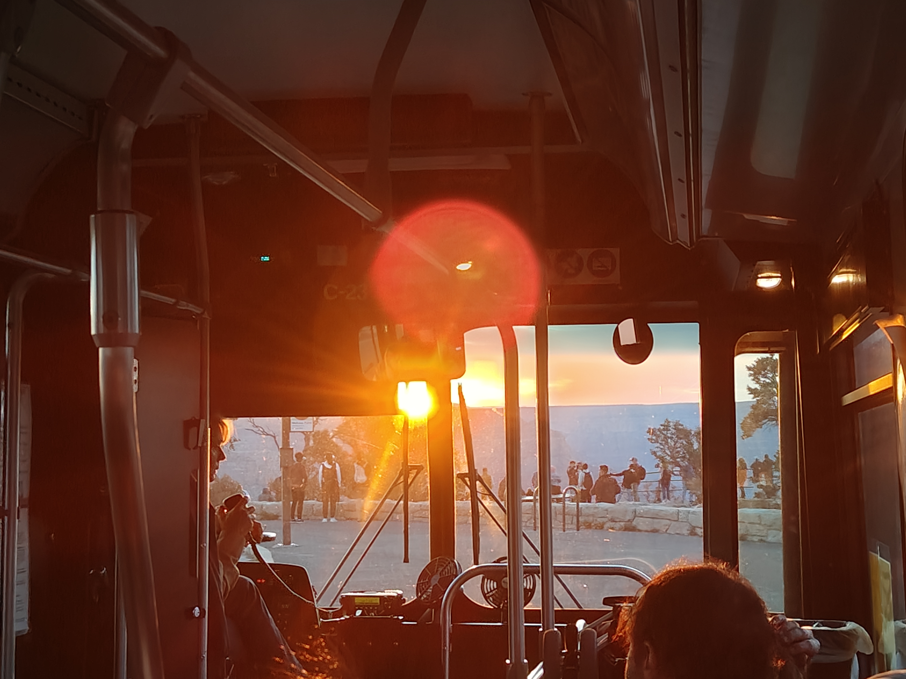
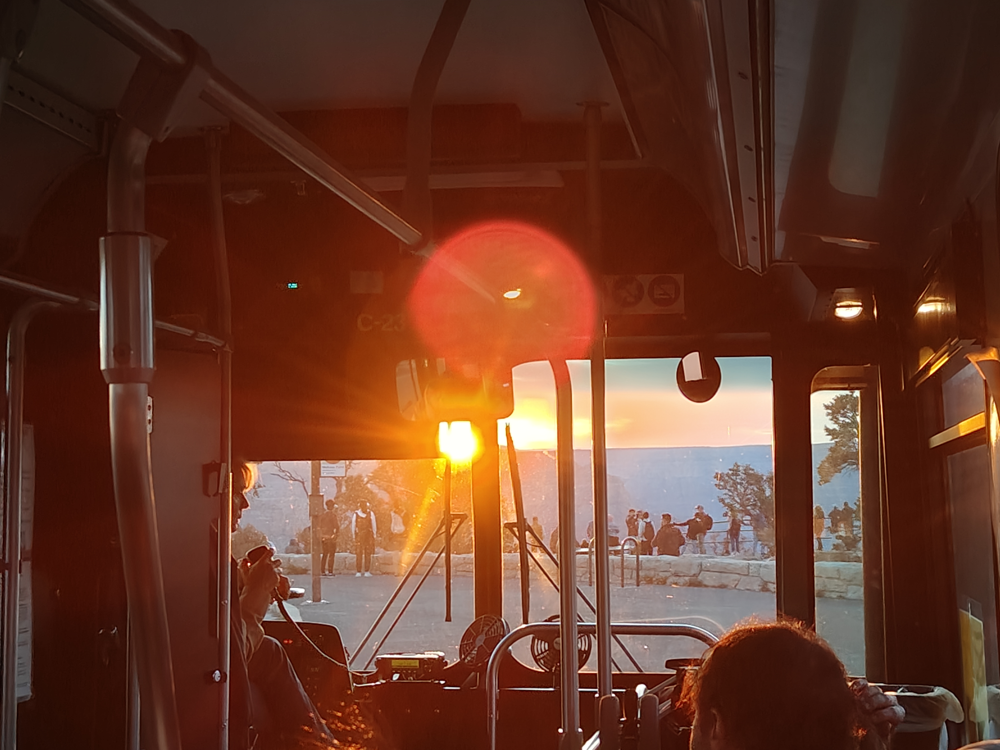
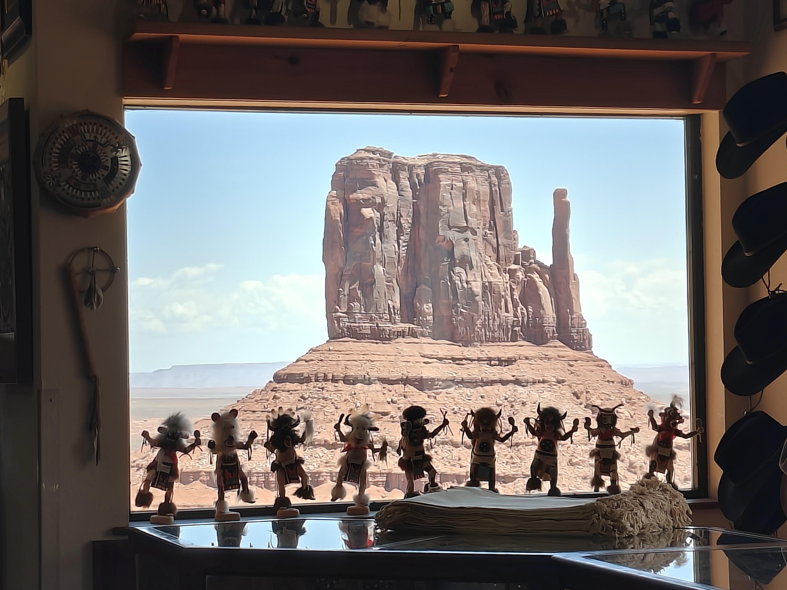
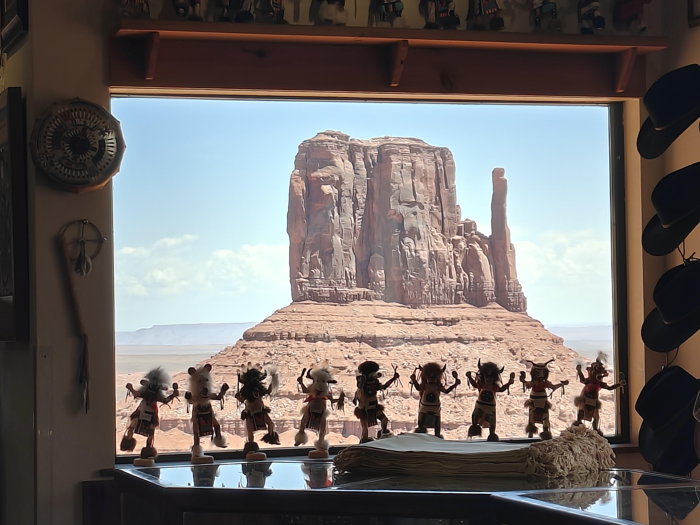
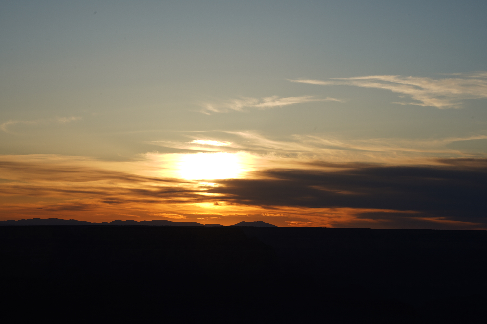
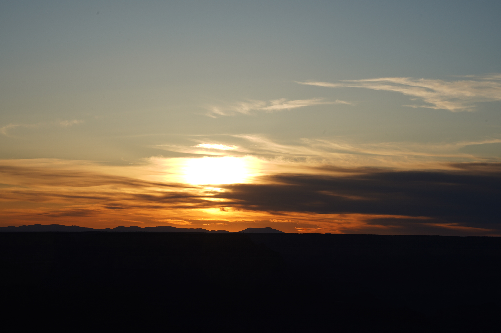

这是一篇迟到了快半年的游记。
我好像总是这样，在事情的最初是饱有热情的，就像blog的最初连更四条，但是现在欠下的债越来越多。直到现在，迫切的想要给自己留下些什么，迫切的想要坚持点习惯的时候，我又回到了这里。说实话，这段旅程我已经记不起太多，记不清我们在麦当劳荒唐的错过飞机，记不清我们临时改航班到一个陌生的地方睡上三个小时又再次启程，记不清一路的魔术和冷笑话，记不清大峡谷的落日余晖，记不清纪念碑谷的泥泞山路，记不清羚羊谷的满目红岩，记不清狂走拉斯维加斯的灯火阑珊。我向来是记不住地名的，记不住在哪个花园里面，我们轮流给对方当摄影师，记不住在哪个雪山下，我们一起遥望，记不住在大峡谷的哪一站，带着恐高的小伙伴一起穿梭在自然山间，记不住在哪里的酒店里我们把酒言欢...
我记不住的那么多，以至于现在甚至有些难以分清每张图片属于哪一个公园，难以分清那时候的快乐和友谊是否真实，那时的我是否真的那般幼稚。但是或许是从那时起，我开始懂得人生是旷野。
时间真的已经过去好久了，久到一些人很难再遇见了，久到记忆开始失真。但是在大峡谷的山林徒步带来的感悟，却不是时间尺度所能稀释的。在那之前，也在那之后，我永远会觉得穿梭在林间，是人生最美好的体验。不论身边有三五好友，又或是孤身一人，不论耳机里是舒缓音乐，还是谛听自然呼啸，不论身边风景是巍然的峡谷，还是茂密的树林，它始终美好。我无数次幻想过，如果那时候有无人机从我们头顶飞过的话，看到的应该是几个黑点在广袤的地图上闪烁移动，我想当人觉得自己渺小的时刻，或许是最接近自我成就的一刻。我喜欢深一脚浅一脚的踩在石路上，又或是在路很窄的时候，踩在落叶上，因为起伏本身就是充满乐趣的。我喜欢随处找一块石头坐下，它不必有最开阔的视野，望下去是无底深渊也好，是旁逸斜出的树木也罢，只需要你静静的坐在那，你就会感受到旷野的存在。我喜欢一群人聚在一起，等待着夕阳，不管看到还是没看到，都会觉得值得，因为等待本身就是意义。我喜欢从夕阳中开到黑暗的大巴，刚上车时总是人声鼎沸的，直到天色渐黑，人们总会很有默契的开始安静，直到窗外的蝉鸣盖过发动机的声音，那时候，哪怕车内依旧熙熙攘攘，却有身边空无一人的宁静。


 



 

 
